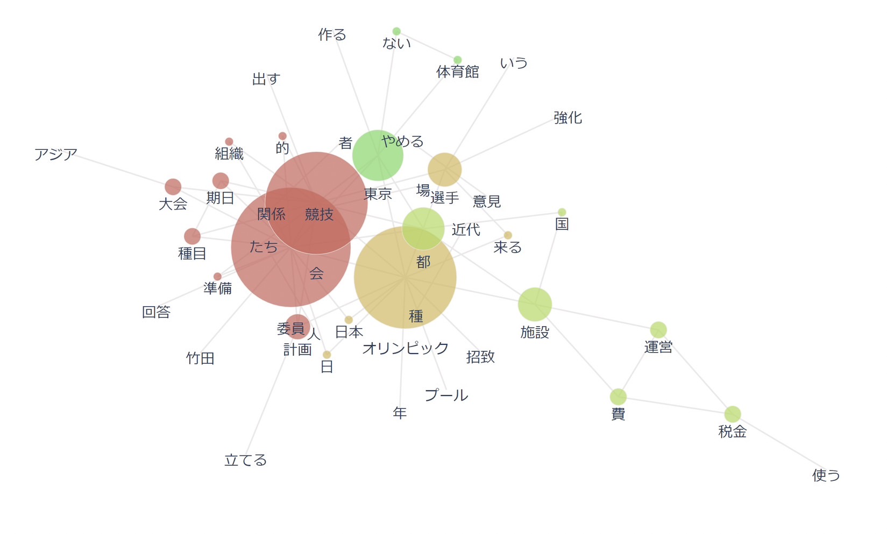
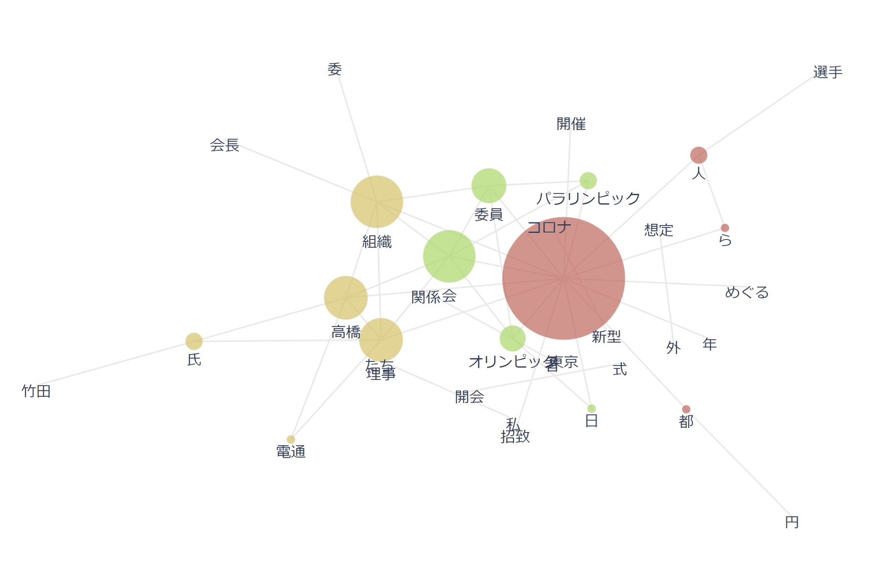

テキストマイニング
｢二つの東京オリンピック（1946年・2020-1年）について新聞記事データ（2万字程度」を収集し、
共起ネットワークを使って、社会がどのように変化したか分析する｣
1946

2020_1

感想
東京オリンピックの2つを比較してみて、1946年は競技、施設、委員といった東京オリンピックに関することが多く書かれているのがわかる。
反対に2020年の方は東京オリンピックに関する情報は少なく、新型コロナウイルスの影響が強い。
コロナウイルスが猛威を振るっているのがわかる。